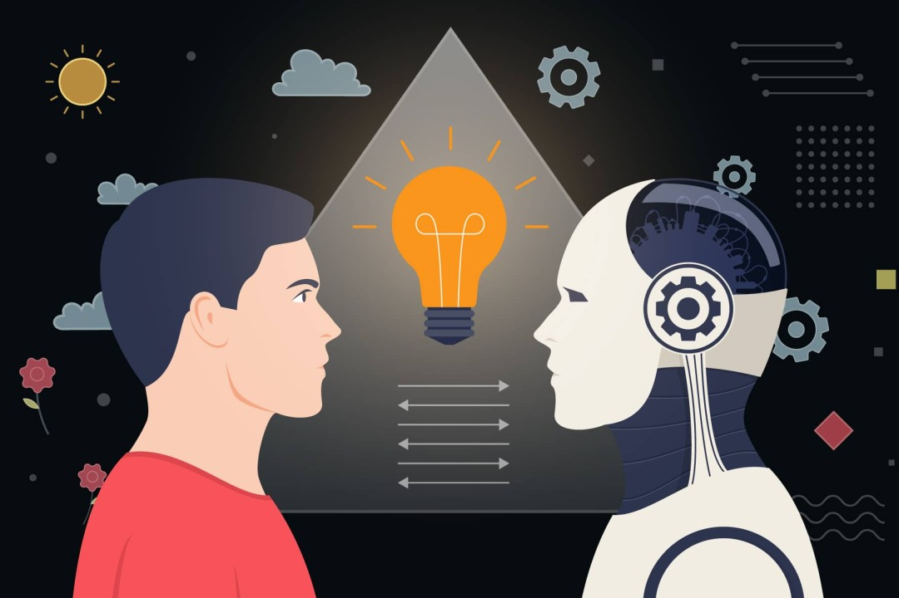

Un avance que no para
La inteligencia artificial avanza tan rápido que a veces cuesta
seguirle el ritmo. En 2022 llegó ChatGPT y sorprendió al mundo. En
2025 ya teníamos modelos que superan a los humanos en matemáticas,
programación y razonamiento lógico. Y en 2026 la competencia entre
OpenAI, Anthropic, Google y xAI es tan cerrada que los benchmarks
cambian cada pocas semanas.
Números que lo dicen todo
Los expertos estiman que la IA podría agregar más de 4 billones de
dólares a la economía mundial cada año. Ya el 88% de las empresas la
usa en alguna parte de su negocio. Los modelos como Claude, GPT-5,
Grok 4 y Gemini ya resuelven de forma autónoma entre el 73% y el 81%
de problemas reales de programación según los benchmarks SWE-bench
de 2026. Hace tres años eso era imposible.
